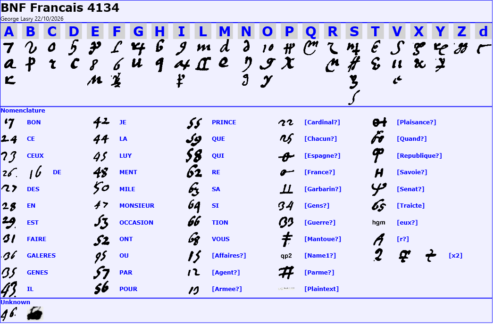
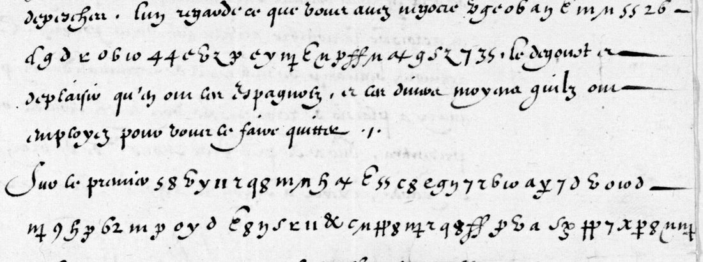
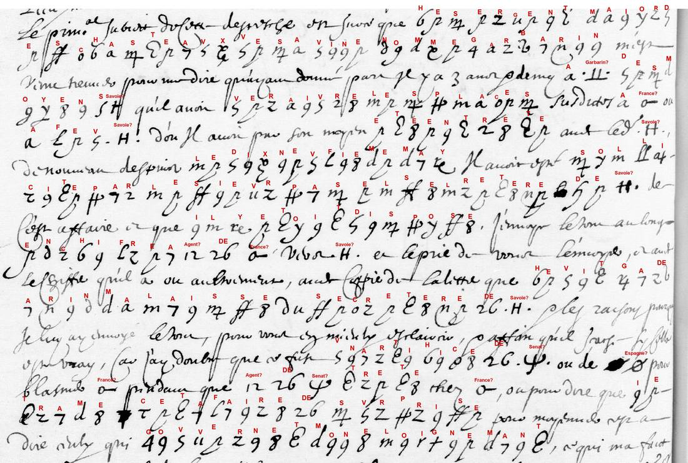
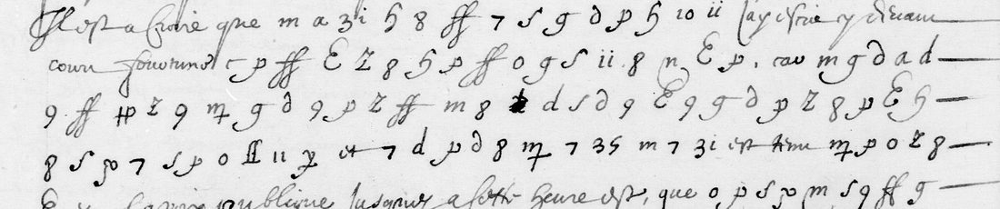

At a glanceKey recovered from the ciphertext alone · 3,352 of 3,353 signs in 43 images
- The letters
- Louis XIII to Melchior de Sabran, French resident at Genoa, Dijon, 28 March 1631; and 17 letters of Sabran to Bouthillier, secretary of state, copied in his letter-books of 1633 and 1635. All in French.
- Where
- Bibliothèque nationale de France: Baluze 155 f. 79 (DECODE R2748); Français 4134 ff. 46v–73v; Français 4135 ff. 132–252. All on Gallica.
- The cipher
- 22 letters with up to four signs each (letters, digits and invented shapes), 41 two-digit codes for common words, ten signs for names, and signs that double the letter before them.
- How it was solved
- George Lasry recovered the key in 2022 with the built-in cryptanalysis of CTTS (CrypTool Transcriber and Solver), from the King’s letter. In October 2026 he transcribed all 43 images and completed the code list with Claude Opus 5.5 and OpenAI Codex. Re-checked here mechanically, statistically and against an earlier independent reading.
- What it says
- The King keeps the Prince of Monaco in play without a treaty (1631); a sergeant-major offers Sabran the castles of Savona, a plot Savoy is running, and it is discovered (1633); Genoa helps the Spanish fleet while France fights for Valenza (1635).
- Credit
- Key, transcription, edition and translation by George Lasry (pull request 84). An earlier AI reading of nine 1633 leaves by Harumi-Matsuba (issue 56) agrees with his on 88% of the letters.
- Still open
- One code (46); 212 name signs read from context only; a few runs that do not read; seven listed leaves and a 1636 copy not yet done.
This page joins two earlier entries: Louis XIII’s letter of 1631, which had its own page, and a partial reading of the 1633 letter-book sent in as issue 56. They are one cipher, so they are one entry.
01The letters
Melchior de Sabran was the King’s resident at Genoa from the end of 1629 to about 1638. Français 4134 and 4135 are his own letter-books: copies of his despatches to “Monsieur Bouthillier”, with the secret passages copied in cipher. Claude Bouthillier countersigned the King’s letter of 1631; his son Léon, comte de Chavigny, held the office from March 1632, and which of the two received each later letter is not settled. Most photographs show only part of a letter.
| Source | Images | Cipher signs | Letters |
|---|---|---|---|
| Baluze 155 f. 79r–v: Louis XIII to Sabran, Dijon, 28 March 1631 | 2 | 528 | 1 |
| Français 4134 ff. 46v–73v: Sabran to Bouthillier, June–October 1633 | 14 | 1,061 | 8 |
| Français 4135 ff. 132–252: Sabran to Bouthillier, May–December 1635 | 27 | 1,764 | 9 |
02The key

- Letters. 22 letters, each with one to four signs: lower-case letters used for other letters, digits (7 = A, 8 = E, 9 = I, 10 = O, 11 = V) and invented shapes. There are 51 letter signs in all; S has four.
- Word codes. 41 two-digit numbers for common words and syllables, numbered in the order of their first letter: 17 bon, 24 ce, 26 de, 35 Genes, 47 monsieur, 55 prince, 59 que, 66 tion, 68 vous.
- Names. Ten signs for names, identified from their context: France, Spain, the Republic (of Genoa), Savoy, the Senate, Parma, Mantua, Piacenza, an agent, and Garbarino.
- Doubling. Three signs repeat the letter before them.
The clerks’ hands differ from leaf to leaf, so the same sign can look different. The clerk of ff. 57 and 242v–245v, for example, writes H with a straight stem and F as a script L, where the others use a “6” and a straight b.
03The King’s letter of 1631

The King thanks Sabran for his despatches and answers two points. The cipher carries the first, the Prince of Monaco, who had offered through his agent Orazio Rossi to come over to France. In George Lasry’s reading the King declines the conditions, and keeps the door open:
je n’ai pas ivge a propos d’y entendre pour plvsievrs bonnes raisons, n’y de faire venir ici le sievr Rossy … sans entrer pour le present en avcvn avtre traicte avec luy, ny avssi faire avcvne rvptvre de la negociation
Richelieu broke off the Monaco talks after the peace of Cherasco so as not to offend Savoy; Monaco came under French protection only in 1641.
04The Savona plot, 1633

In June 1633 Garbarino, sergeant-major of the castles of Savona, offered to hand them to France or to Savoy. Sabran passed the offer in cipher to the French agent in Savoy and kept out of sight, suspecting a trap. In the summer Garbarino came back dressed as a peasant and set out Savoy’s plan; Sabran sent him away without an answer. In September the plot was discovered and the munitioner of Savona and two others were brought to Genoa. Genoese histories record Giambattista Garbarino of Sassello, executed for treating with Victor Amadeus of Savoy; Sabran’s letters show the affair from the French side.
From the letter on f. 57 (summer 1633), with the enciphered words in bold:
qu’il luy faisoit scavoir le lieu ou seroit les echeles, celluy ou debvoit arriver mile homm[e]s seullement par mer, nomme le fornace, vn mile sur savone a deux mousquettades de l’endroict dv chateav
“He let him know the place where the ladders would be, and the one where a thousand men were to land, by sea only, named Le Fornace, a mile from Savona, two musket shots from the castle.”

05Genoa in the war of 1635
The nine letters of 1635 (Français 4135) follow the first year of the open war with Spain. France, Savoy, Parma and Mantua besieged Valenza from September to the end of October and failed; on 13 September a Spanish fleet took the Lérins islands off Provence, and Genoa, formally neutral, let it use its ports. Sabran’s ciphered passages propose to reopen the Monaco talks or to surprise Monaco with troops from Pinerolo (“fewer than thirty Spaniards” there), to take Tortona and Serravalle and prefer Novi to Gavi so as not to alarm Genoa, and record that Genoa’s state inquisitors paid his own servants 25 écus a month. The last letter, of 18 December, reports 4,000 Spaniards landed at Vado.
The French text and English translation of all 18 letters, with notes, are in George Lasry’s READING.md.
06How it was checked
- Mechanically. A short script (
decode.py) applies George Lasry’s key file to his transcription and gives his counts exactly: 3,353 cipher signs, 2,853 letter signs, 287 firm and 212 tentative code readings, and one unknown code. - Statistically (
docs/_validate.py, French letter model, letter signs only). The reading scores −2.13 per letter; random keys of the same shape score −5.73 (7.8 standard deviations lower), and a key fitted to the shuffled signs −3.26 (94 lower). Verdict: pass. - Word cover. 84% of the deciphered text falls in French words of three letters or more. The same measure gives 92% on the King’s letter, which George Lasry deciphered in full in 2022, so that is its ceiling; shuffled keys give 37%.
- Against an independent reading. Harumi-Matsuba’s AI pipeline read nine 1633 leaves with Lasry’s published key (issue 56). 88% of their decoded letters agree with his; on f. 73v all of them, on f. 66v 98%. On f. 50v, where their runs formed no words, his read.
- On the image. One cipher line of the King’s letter was checked sign by sign on the DECODE photograph: 26 of 26 signs agree.
- Earlier readings. George Lasry published the key and the 1631 decipherment on S. Tomokiyo’s Cryptiana in 2022. No edition of the 1633 and 1635 passages was found.
07What remains open
- Code 46, once, in “d’une [46] de l’armée navale” (fr. 4135 f. 219).
- Name signs read from context: 212 occurrences of France, Spain, the Republic, Savoy and the rest. In the hand of ff. 215v–216 the signs for France and Spain may be confused.
- Runs that do not read, probably copyists’ slips: on f. 50v veraivre, fevitga; on f. 215 parico; on f. 228v duc de s / vop.
- Leaves not yet done in the same cipher, all on Gallica: fr. 4134 f. 51; fr. 4135 ff. 217, 226v, 227v, 231v, 239v, 243; and a 1636 copy in Baluze 156 f. 157.
- The originals as Bouthillier received them should be in the Archives diplomatiques (Correspondance politique, Gênes); they are not digitised.
08Sources
- Bibliothèque nationale de France: Baluze 155 (also DECODE R2748), Français 4134, Français 4135; the catalogue of fr. 4133–4138, which dates the letters by folio.
- George Lasry: the key, transcription, edition and translation, pull request 84, files in targets/sabran1633/lasry2022/.
- S. Tomokiyo, Cryptiana: “Ciphers Solved by George Lasry” (“Melchior de Sabran (1631)”, the 2022 key and overlays) and “French Ciphers during the Reign of Louis XIII” (the list of Sabran cipher passages).
- Harumi-Matsuba, the earlier reading of nine fr. 4134 leaves: issue 56.
- G. Saige, Monaco, ses origines et son histoire (1897), pp. 195–197; F. Donaver, La storia della repubblica di Genova, II (1913), pp. 278–281; D.-L.-M. Avenel, Lettres … du cardinal de Richelieu, III–VI (1858–1867); E. Sue (ed.), Correspondance de Sourdis, I (1839).
Notes, George Lasry’s files and the checks: targets/sabran1633/.